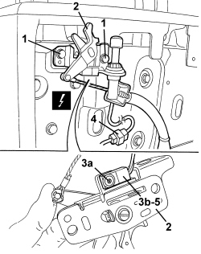

7025D25 HOOD HOUSING COMPARTMENT COVER LOCK CLOSING SENSOR (ONE), LEFT OR RIGHT - R.R.
- Path
- Procedures > 70 FITTINGS > 7025 COMPARTMENT COVERS > 7025D HOOD HOUSING COMPARTMENT COVER > 7025D25 HOOD HOUSING COMPARTMENT COVER LOCK CLOSING SENSOR (ONE), LEFT OR RIGHT - R.R.
- Kind
- repair procedure (removal / refitting; the operation number is the code)
- Applies to
- engines: 2.2 JTS, 3.2 JTS; all production periods
- Interactive page
- https://sloeber94.github.io/elrnDB-aBrrSpdr/en/#/946004085
Applies to: engines: 2.2 JTS, 3.2 JTS; all production periods
 Removing
Removing
 Refitting
Refitting- Prepare the hood for the operation.
Op. 0010T79 HOOD HYDRAULIC SYSTEM - DISCHARGE AND RESTORE PRESSURE
Op. 7040C11 HOOD HOUSING COMPARTMENT FLOOR TRIM - R.R.
Op. 7040C12 HOOD HOUSING COMPARTMENT FRONT TRIM - R.R.
1. Undo the bolts securing the lock.
2. Move the lock slightly.
3. Undo the bolt (3a) and move the sensor (3b).
4. Disconnect the electrical connection for the sensor.
Description | Component |
|---|---|
LEFT HOOD COVER LOCK SENSOR | |
RIGHT HOOD COVER LOCK SENSOR |
5. Keep the sensor and wiring.

Applies to: engines: 2.2 JTS, 3.2 JTS; all production periods
Refitting
Removing- Check that the sensor is not damaged.
- Position the sensor and wiring.
- Connect the electrical connection for the sensor.
- Place the sensor on the lock and tighten the bolt.
- Position the lock and tighten the fixing bolts.
- If discharged, restore the hood hydraulic system pressure.
Op. 7030H03 HOOD MANUAL OPENING FOLLOWING DEACTIVATION OF HYDRAULIC SYSTEM - CARRY OUT PROCEDURE
- Using the electric control, operate the hood and check that the closing sensor and lock are working properly.
- Close the hood housing compartment cover and check that it is correctly aligned with the bodywork.
Carry out the alignment, if necessary.
Op. 7025D10 HOOD HOUSING COMPARTMENT COVER - ALIGNMENT
Topics linked from this page (7)
- 0010T79 HOOD HYDRAULIC SYSTEM - DISCHARGE AND RESTORE PRESSURE
- 7025D10 HOOD HOUSING COMPARTMENT COVER - ALIGNMENT
- 7030H03 HOOD MANUAL OPENING FOLLOWING DEACTIVATION OF HYDRAULIC SYSTEM - CARRY OUT PROCEDURE
- 7040C11 HOOD HOUSING COMPARTMENT FLOOR TRIM - R.R.
- 7040C12 HOOD HOUSING COMPARTMENT FRONT TRIM - R.R.
- K201 LEFT HOOD COVER LOCK SENSOR
- K202 RIGHT HOOD COVER LOCK SENSOR